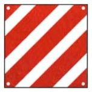
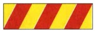
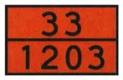

The map for this topic
The ministry files three subjects under one heading. Read them as one journey and the pile of rules falls into place: before you set off (people, animals, cargo, a trailer), out on the autostrada, and when something goes wrong (an emergency stop, a breakdown, a spilled load). Around the journey sit two habits of recognition: the marker panels that flag special vehicles and loads, and the mismatched road users you must allow for, whether slow, light, or huge.
For US drivers. Two obligations with no American counterpart: every car must carry a warning triangle and a hi-vis vest, and you must use them when stopped on the roadway outside town. And the autostrada's right-hand strip is an emergency lane, not a shoulder. Driving or stopping on it outside a genuine breakdown is a serious violation.
Before you set off: people, animals, cargo
- The number of seats, at most nine including the driver, is on the registration document. For a truck, too, the number of people it may carry is whatever its registration document states.
- Passengers must not block the driver's view or movement.
- One animal may ride free if it is no hindrance.
- More than one animal must be caged or behind a net. A leash is not enough.
- The load must be secured against falling or scattering, must not reduce visibility or hide the lights, plate, or hand signals, must not unbalance the vehicle, and must stay within the vehicle's outline limits. It must also leave the driver full freedom of movement at the controls.
- A load may never project at the front of the vehicle.
- At the rear a load may project up to 3/10 of the vehicle's length if it is indivisible.
- A rear projection is marked by the red-and-white striped retroreflective panel or panels, and that panel is the only marking allowed for it.
- Sideways a load may project at most 30 cm (12 in) from the position lights. No panel marks a sideways projection, because the limit itself is the safeguard.
- Nothing may drag on the ground.
- Whenever the load projects, the driver must take every precaution to avoid danger to other road users.
- On motorcycles and mopeds a passenger may ride only if the seat is on the registration and the rider is at least 16 years old. No passenger may be under 5 years old, and there is no rule that the passenger be an adult.
- Objects carried on a motorcycle must be firmly secured, must not limit the rider's visibility, and may project at most 50 cm (20 in) beyond the outline, sideways or lengthwise. The projection is capped, not simply forbidden.
Towing a trailer
Hooking up
- A trailer is a separate vehicle, with its own plate and its own periodic inspection. Being a vehicle in its own right, it may be hitched to any suitable towing vehicle.
- A trailer has its own insurance, which covers it even when it is stationary or detached. While it is being towed on the road, it is covered by the same policy as the towing vehicle.
- The electrical connection is required even for light trailers.
- The towing gear must be type-approved, lubricated, and free of play or cracks, and worn parts are replaced, never welded. The coupling must also allow enough vertical movement between car and trailer to absorb their different angles over dips and crests.
- When you are not towing, the part of the hitch projecting beyond the vehicle's rear outline must be withdrawn, removed, or folded back.
- No towable-mass figure on the registration document means no towing at all, and a vehicle may tow only one trailer or vehicle.
Loading it
- Heavy items go low, near the trailer's axle, centered side-to-side. They are never piled over the hitch (that overloads the coupling and the car's rear axle and lightens the steering wheels) and never set far behind the axle (that sets the trailer swaying).
- Under braking the load shifts forward, under acceleration backward, and liquid surge in a tank is a major instability cause.
- No one may ride inside a caravan in motion.
- The tongue-jack wheel is the small swiveling wheel at the trailer's nose, used to move it by hand when unhitched, and it rides raised.
- Before setting off, check lights, mirrors, and the load on the hitch, whose permitted figure is on the rating plate fixed to the hitch. The car must not squat at the back or point its headlights up.
How it changes the drive
- Towing lengthens the braking distance, cuts acceleration, heats the engine on climbs, makes the combination wind-sensitive, pushes the car on descents, and cuts in on bends. It follows a wider swept path, so watch the right rear wheel at curbs.
- The trailer cuts in because it follows a circle of smaller radius than the towing vehicle.
- Towing also raises fuel consumption, even at moderate speed.
- Before any maneuver with the trailer hitched, make sure no people or objects are within the combination's turning radius.
- The common inertia (overrun) brake works off that push: the slowing car is shoved by the trailer, the coupling compresses, and only then do the trailer's brakes apply. Its braking therefore always lags an instant behind the car's.
- Rust can weaken the inertia brake after long disuse.
- If the trailer breaks away, the safety device applies its parking brake automatically.
- When you leave a trailer parked, engage the parking brake and, on a slope, add wheel chocks.
- In town a detached trailer may not be left parked, unless signs allow it.
- For a long layup, jack the trailer off the ground if you can. If you cannot, raise the tire pressure a little and roll it now and then so the tires do not develop flat spots.
The numbers to memorize
- The towing ratio compares the mass of the trailer with the mass of the towing vehicle:
towing ratio = trailer's mass ÷ towing vehicle's mass
- A trailer with its own service brake and a mass up to 3.5 t may reach 1, and a trailer with no braking device at all may reach 0.5. Both limits apply only within the towable mass on the registration document. The limits depend on the masses alone, whatever braking equipment the car itself carries, ABS included.
- Mirrors may project at most 20 cm (8 in).
- A combination over 7 m (7.7 yd) must keep to the two right lanes on an autostrada with three or more lanes.
- A combination over 3.5 t means a zero blood-alcohol limit for its driver.
- The rear speed discs on the trailer's tail show the combination's maximum speeds, and they are required because a car with a trailer is held to lower limits than usual: 70 km/h (43 mph) outside towns and 80 km/h (50 mph) on the autostrada. The trailer's mass does not matter, so a trailer up to 3.5 t carries them too, unlike a truck up to 3.5 t.
- T.A.T.S. trailers (Trasporto Attrezzature Turistiche e Sportive: boat, glider, and similar sport-gear trailers) follow the same rules: the right-side mirror stays required, and a boat may protrude at most 30 cm (12 in) per side beyond the rear position lights. The gear they carry serves leisure only and is never goods for trade.
- Which license a heavy combination needs (B96, BE, C, CE) comes later, in the Licenses, documents & penalties review.
Out on the autostrada
Who may not enter
The autostrada is closed to bicycles, mopeds and motorcycles under 150 cm³, to vehicles that cannot reach 80 km/h (50 mph), to motorcycles with a sidecar under 250 cm³, to agricultural and work machines, to vehicles without pneumatic tires, in poor condition, out of inspection or over the size limits, to pedestrians and animals except in service or rest areas, and to vehicles with insecure or scattering loads. In those areas an animal may move about only if properly supervised.
Registered trailers of every kind, horse trailers included, enter with the car that tows them.
The 150 cm³ figure is the measure for a gasoline engine, while an electric motorcycle is measured by power instead and must reach 11 kW. Since 2021 a motorcycle of at least 120 cm³, or 6 kW electric, is admitted if the rider is an adult.
A pedestrian may walk the emergency lane only to reach an SOS call point.
Getting on and off
- The acceleration lane (corsia di accelerazione) yields to traffic already on the road.
- To leave, move right in time and use the deceleration lane (corsia di decelerazione) from its start, not from some point further along. In the USA the driver manuals give the same advice, and for the same reason, that slowing in a through lane is what causes the rear-end collision, but there it is advice. Here it is art. 176 of the Code, an obligation and not a recommendation.
- Signal your lane changes.
Conduct
- Low beams (anabbaglianti) are compulsory even by day. Reversing, U-turns, and wrong-way driving are forbidden.
- Hitchhiking and giving lifts are forbidden.
- Commerce is forbidden unless the road authority has authorized it.
- Camping is forbidden outside the areas set aside for it, and it is confined to the period set by the road authority. A statement may list every part of the autostrada, ramps and junctions included, to say where this rule applies, and it still allows camping only in the designated areas.
- In a service area (area di servizio), do not leave the vehicle parked more than 24 hours.
- On the autostrada and on main extra-urban roads (strade extraurbane principali), parking is allowed only in the designated areas, such as service and rest areas.
When something goes wrong
The emergency lane
- Stopping is allowed only for breakdown or illness, with no reversing, for the strictly necessary time and never over 3 hours, after which the vehicle can be towed away. That is an emergency halt (sosta di emergenza), never parking: the lane is not a place to leave a car, and the three hours are a ceiling, not an allowance.
- At night or in poor visibility keep the position and hazard lights on. If they fail, set out the triangle wearing the vest.
- The triangle is also needed, day or night, when the vehicle cannot be moved onto the emergency lane.
- In a traffic jam, do not drive on it, except to exit, from the 500 m (545 yd) exit-warning sign onward. Instead, vehicles in the right lane move toward the left line to open a gap for emergency vehicles.
- Never give a stranded motorist a lift, and never reverse back to help. Assistance means the people who stop are the danger. Call 112 (the European equivalent of the US 911) or roadside assistance instead.
- Never tow a stranded vehicle yourself. On the autostrada only authorized recovery vehicles may tow.
The warning triangle
- The triangle (triangolo) is compulsory equipment. Place it behind the obstacle at least 50 m (55 yd) back, and 100 m on the autostrada, where speeds are higher, and at least 1 m (1.1 yd) from the edge, so it is visible from 100 m (110 yd). It goes in the lane the obstacle occupies, never on top of the load and never in the lane beside it. If a junction lies within 50 m, put it wherever it is best seen. The edge that counts is the outer edge of the carriageway, not the line between the two directions of travel. The one case in which a triangle also goes in the middle of the carriageway is spilled slippery or dangerous material, described below.
- It is mandatory outside built-up areas at night when the rear lights are missing or weak, and even by day when the obstacle cannot be seen from 100 m. Inside built-up areas the triangle obligation does not apply. Outside built-up areas at night the triangle is always required for a load that has fallen onto the carriageway, since a load carries no lights of its own.
The hi-vis vest
- Whenever you step onto the road, even on the emergency lane or a pull-off, you must wear an approved high-visibility vest or shoulder straps (bretelle), outside built-up areas.
- The vest only makes you seen, and it protects against nothing else. Retroreflective means the fabric bounces headlight beams straight back at their source, so you light up in any approaching driver's own lights.
- The vest is no substitute for the triangle.
- The vest need not be yellow.
- One vest or set of straps on board is enough: there is no rule of one per seat, since it is worn by whoever gets out to place the triangle.
Spilled or fallen loads
If your vehicle or a fallen load blocks the road, clear the passage as far as possible and warn other traffic.
A broken-down vehicle is pushed off the carriageway or, if that is impossible, placed at its right edge. Outside built-up areas, a fallen load or crashed vehicles that cannot be moved are pre-signaled with the warning triangle.
For spilled viscous, flammable, or dangerous substances, also signal in the middle of the road, give hand signals on the side the triangle does not cover, and spread sand or earth to restore grip. You do these things yourself at once, without waiting for the road authority to arrive.
Inform the police when the obstruction cannot be removed.
Emergency towing of a broken-down vehicle
Use a solid, properly signaled connection (a rope, bar, or cable), and doing without one costs 2 license points. This kind of tow is allowed only because the towed vehicle can no longer run, through a breakdown or a missing essential part.
The towed vehicle keeps its hazard flashers blinking, and the person steering it must hold a license. For the driver of the towing car an ordinary category B license is enough.
With the engine off its power steering will be heavy, and it stays in neutral on its own wheels.
Marker panels: know them at a glance
These four are easy to confuse, so match each panel to its job.

- The red-and-white striped square marks a rear-projecting load, and it is required whenever the load projects at all, even slightly.
- Two panels go side by side across the back if the load spans the full width.
- The panel is never placed on the side of the vehicle. A load projecting sideways has no panel of its own and is held to the 30 cm (12 in) limit instead.
- The panel is fixed at the extremity of the projecting load, where it stays clearly visible.
- The panel tells drivers behind that the vehicle ends farther back than its outline suggests, so they follow with particular caution.
The same panel can also mark a towed broken-down vehicle when its lights fail. Otherwise the towed vehicle keeps its hazard flashers blinking.

The yellow-and-red striped panel is the rear marking of heavy trucks over 3.5 t. It identifies the vehicle; it never signals a projecting load. Like every marker panel, it is fixed to the vehicle and travels with it.

The orange retroreflective plate marks a vehicle carrying dangerous goods (the numbers code the hazard and the substance: 33/1203 is gasoline). Not for projecting loads, not for buses.

The plain yellow rectangle is the rear marker of long vehicles: truck-and-trailer combinations (autotreni) and tractor-trailers (autoarticolati), fitted at the rear of the trailer.
Sharing the road: speed, mass, and blind spots
- Cyclists and mopeds go slowly, wobble, and are hard to judge: keep a lateral gap and avoid small swerves.
- Many are very young and inexperienced or elderly, and an elderly cyclist turns the torso slowly and with difficulty to look behind. A cyclist about to maneuver, especially one riding slowly on an extra-urban road, finds it very hard to judge the approach speed of a motor vehicle, so expect one ahead in your lane to misjudge your speed as it turns left.
- Moped riders are often young and short on experience, so foresee their rashness even when one is riding beside you. Judge the gap to a moped about to turn against your own speed, since that distance is hard to gauge when it brakes sharply to turn into a poorly signed side road.
- Slow vehicles (three-wheeled mopeds, tractors) appear on extra-urban roads, and the speed spread itself is a danger factor (fattore di pericolo): the bigger the gap between fast and slow traffic, the more catching-up and overtaking, and every such maneuver is a conflict point. The two terms work as a pair. A fattore di pericolo is anything that makes traffic more dangerous, and a fattore di sicurezza is anything that makes it safer, which is not the American engineering sense of a safety factor as a margin built into a design. Read it as "makes things safer" and the true-or-false answer follows.
- At a regular speed on an extra-urban road, and all the more at a sustained speed within the limits, it is hard to judge the speed of a slowly moving agricultural machine and the time it takes to reach it. For a moped, a left turn is especially dangerous because it must cut across the path of one or more columns of faster vehicles coming up in the same direction.
- A mass mismatch works the same way: in a collision the lighter vehicle undergoes the larger velocity change, so the risk lands mostly on its occupants. Traffic of similar speeds and masses is safer.
- Trucks, truck-and-trailer combinations, and tractor-trailers that exceed the speed limits are among the highest risks a car or motorcycle driver must weigh.
- A SUV's height and bumpers endanger pedestrians, cyclists, and small cars, and can hide a child.
- Rigid bull bars are metal tube guards bolted to the front of some SUVs and trucks, like the push bars on some US police cruisers. They make a collision more dangerous for whoever is struck, because they concentrate the impact instead of letting the bumper crumple.
- Driving one is particularly demanding in town, where it is least suited, and it calls for special care in emergency maneuvers.
- A truck has large front and side blind spots: it may not see a pedestrian or cyclist just ahead when stopped or moving off.
- Behind an unstable or projecting load, increase your distance, warn the driver, and pass only when safe. Braking and turning are the moments an unstable load is most likely to fall, and dangling goods can hide the vehicle's turn signals, so a turn is hard to spot.
Summary of key points
- Before you set off, the vehicle carries at most nine seats (per the registration), animals are caged or netted if there is more than one, and the load is secured and within the outline. The load has no front projection, may project 3/10 at the rear with the striped panel, and 30 cm (12 in) sideways. On two-wheelers there are no passengers under 5 and the projection is capped at 50 cm.
- A trailer is a separate vehicle, with its own plate, inspection and insurance even when parked. The electrical hookup is required. The load goes low and centered on the axle. The towing ratio is 1 for a braked trailer and 0.5 for an unbraked one. Towing lengthens braking, cuts in on bends, and pushes on descents. A combination over 3.5 t means zero alcohol for its driver.
- The autostrada is closed to vehicles under 80 km/h and to motorcycles under 150 cm³. Low beams are on by day. Reversing and U-turns are forbidden. The acceleration lane yields. Lifts, camping and commerce are forbidden. Parking in a service area lasts 24 h at most.
- When something goes wrong, the emergency lane is only for breakdown or illness, for 3 h at most, and in a jam it is used only to exit from the 500 m sign. The triangle goes 50 m back and 1 m from the edge, and it must be visible from 100 m away. The vest is worn whenever you step out, outside town. An emergency tow uses a solid, signaled link and the hazard flashers.
- Among the panels, the striped square marks a projecting load, the yellow-red stripes mark a heavy truck, the orange plate marks dangerous goods, and the plain yellow one marks a long vehicle.
- In sharing the road, watch cyclists and slow vehicles, because the speed spread is a danger, and remember the mass mismatch, the truck blind spots, and that bull bars make impacts worse.